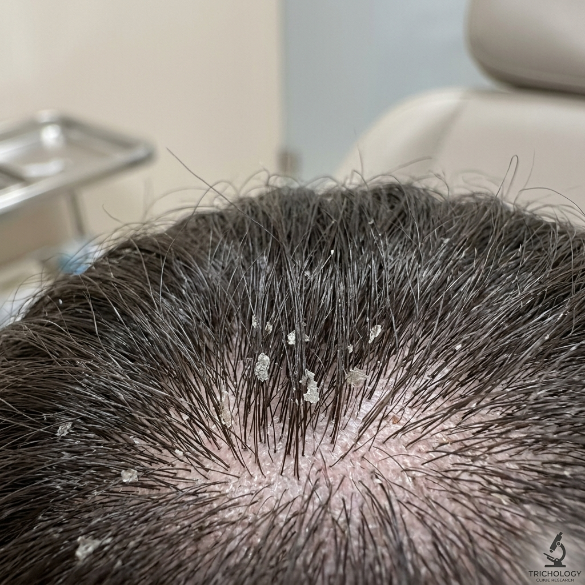
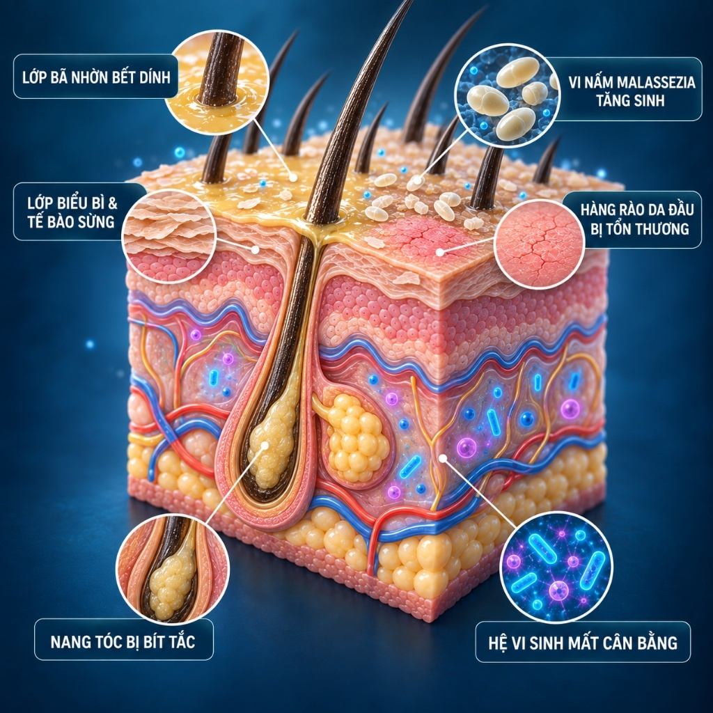
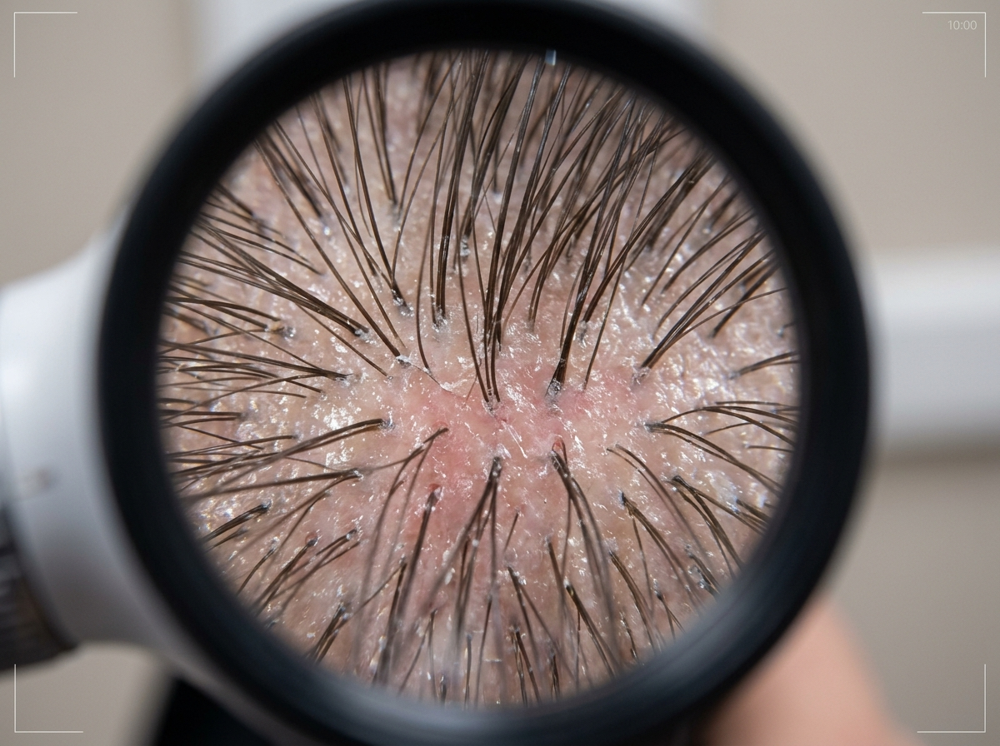
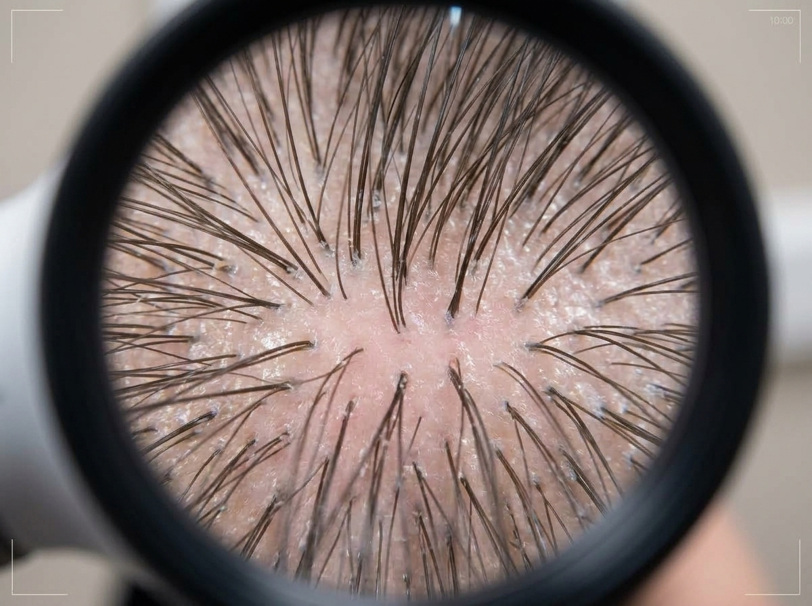
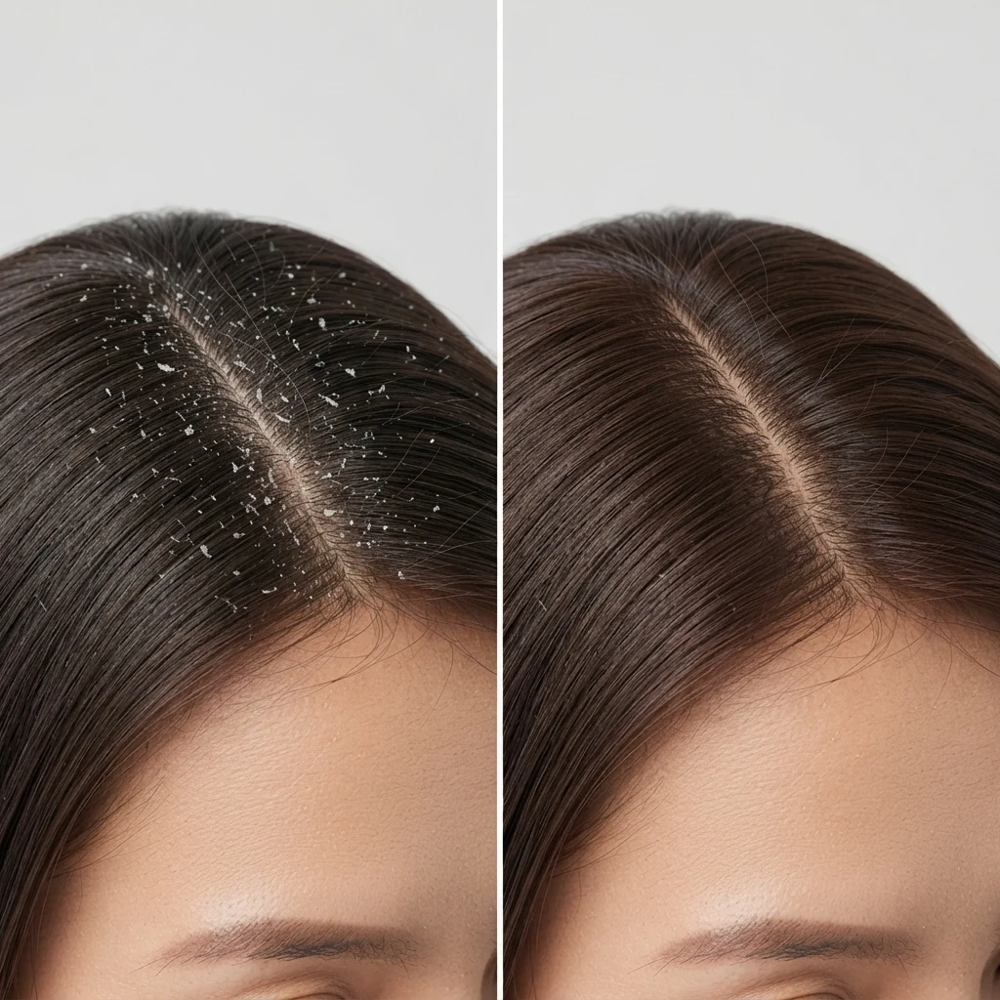
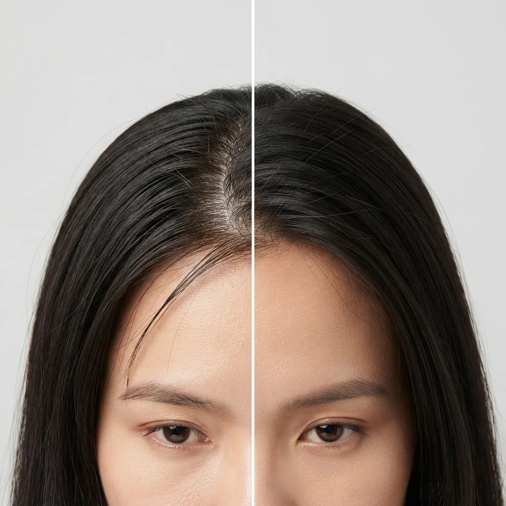
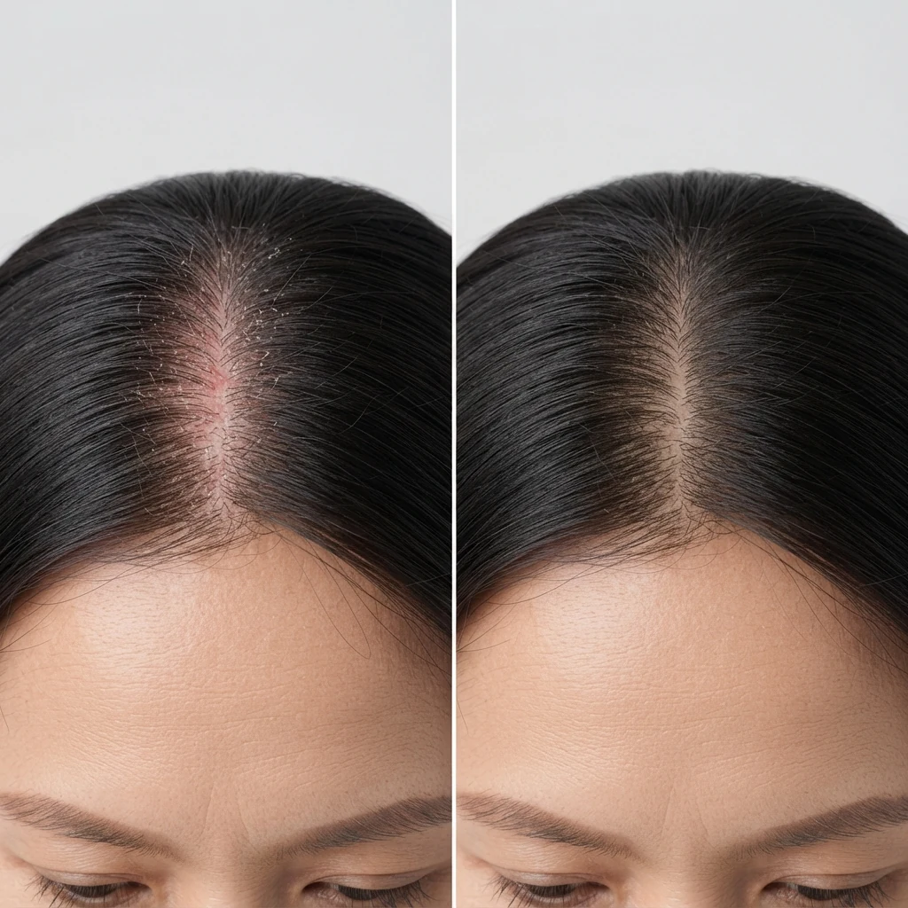
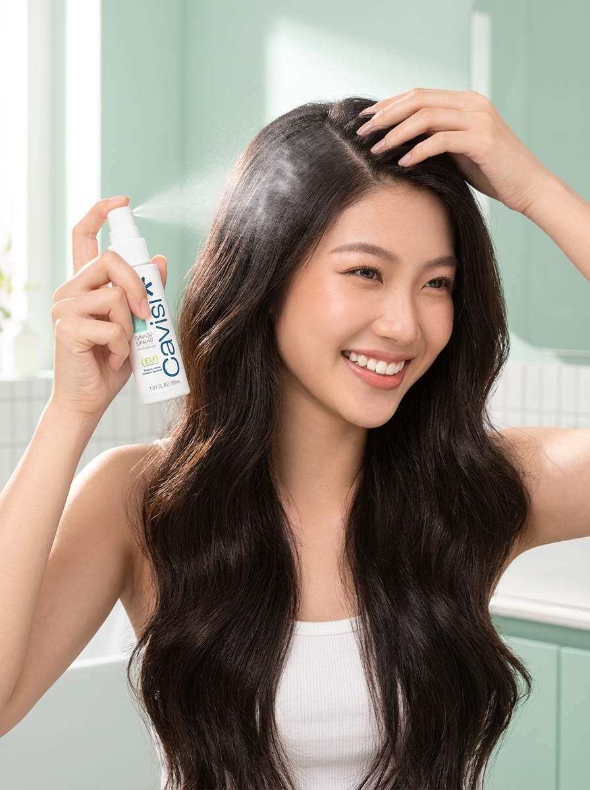

Bã nhờn & Bết dính
Bết xẹp sau khi đội mũ bảo hiểm
Mồ hôi và dầu nhờn đọng quanh chân tóc dưới mũ bảo hiểm, gây bết dính xẹp tóc và bít tắc nang tóc sau mỗi chuyến đi.
Scalp microbiome care
Cavisi tiếp cận chăm sóc tóc từ nền tảng da đầu, với Shampoo và Spray đảm nhiệm hai vai trò khác nhau trong cùng một chu trình.
 SCALP-FIRSTTWO CLEAR ROLES
SCALP-FIRSTTWO CLEAR ROLES01 / Insight & Vấn đề thực tế
Khí hậu nhiệt đới nóng ẩm và thói quen đội mũ bảo hiểm xe máy hàng ngày tại Việt Nam khiến da đầu liên tục tích tụ mồ hôi và bã nhờn — tạo môi trường thuận lợi để vi nấm Malassezia bùng phát và gây ra vòng lặp gàu ngứa dai dẳng.
Mồ hôi và dầu nhờn đọng quanh chân tóc dưới mũ bảo hiểm, gây bết dính xẹp tóc và bít tắc nang tóc sau mỗi chuyến đi.
Ngứa ngáy bứt rứt dưới da đầu, đặc biệt khi thời tiết oi bức hoặc căng thẳng, càng gãi càng khiến da đầu tổn thương.

Gàu & Tế bào chếtLớp sừng tế bào chết bong tróc bám chặt quanh nang tóc, rơi rụng trên vai áo tối màu làm mất tự tin khi giao tiếp.

Vi sinh & Malassezia 🔍 Phóng toDầu thừa là nguồn thức ăn khiến vi nấm men Malassezia tăng sinh quá mức, phá vỡ thế cân bằng tự nhiên của hệ vi sinh da đầu.
02 / Góc nhìn Cavisi
Cavisi xây dựng định hướng Scalp-first: xem da đầu là nền tảng của trải nghiệm mái tóc khỏe và tổ chức sản phẩm theo từng vai trò rõ ràng.
Da đầu là điểm bắt đầu.
Hướng đến chăm sóc đúng mức.
Khoa học hiện đại kết hợp cảm hứng tự nhiên.
Minh họa / Tình trạng da đầu
Minh họa trực quan sự khác biệt giữa môi trường da đầu bết dầu, tích tụ vảy gàu và môi trường da đầu sau khi được làm sạch nền kết hợp chăm sóc tiếp nối.

Bã nhờn dư thừa và vảy gàu tích tụ quanh chân tóc, da đầu kích ứng và mất cân bằng hệ vi sinh.

Nền da đầu được làm sạch dầu thừa và vảy gàu, nang tóc thông thoáng, tạo điều kiện thuận lợi để da đầu duy trì cân bằng.

Salicylic Acid (BHA) dịu nhẹ bẻ gãy liên kết sừng chết, kết hợp Climbazole ức chế vi nấm Malassezia, ngăn gàu quay trở lại.

Kẽm Zinc PCA điều tiết hoạt động của tuyến bã nhờn, giải phóng chân tóc khỏi bết dính, tạo độ bồng bềnh tự nhiên suốt 24h.

Men vi sinh Postbiotic vỏ liễu và Dipotassium Glycyrrhizate củng cố hàng rào ẩm sinh lý, làm dịu tức thì cảm giác châm chích.
Lưu ý minh bạch: Hình ảnh trực quan hóa các trường hợp điển hình nhằm minh họa cho cơ chế và triết lý chăm sóc Scalp-first của Cavisi. Hiệu quả thực tế có thể khác nhau tùy thuộc vào cơ địa và mức độ duy trì chu trình của từng cá nhân.
03 / Khoa học & Cơ chế hoạt động
Dầu gội thông thường chỉ tiếp xúc với da đầu trong 2 phút rồi bị xả trôi. Cavisi giải quyết giới hạn này bằng chu trình hai bước: Làm sạch nền trước bằng dầu gội (Rinse-off), tiếp nối cân bằng vi sinh bằng xịt dưỡng lưu lại suốt 24h (Leave-on).
 🔍 Phóng to chi tiết 3D
🔍 Phóng to chi tiết 3D
 🔍 Chạm phóng to HD
🔍 Chạm phóng to HD
Rinse-off Cleanser · Chuẩn bị nền da đầu
 🔍 Chạm phóng to HD
🔍 Chạm phóng to HD
Leave-on Tonic · Bảo vệ liên tục suốt 24 giờ
04 / Bộ đôi Cavisi

SHAMPOO
Giúp làm sạch tóc và da đầu, làm sạch gàu và dầu nhờn trên da đầu.
Xem chi tiết Shampoo
SPRAY
Xịt dưỡng dùng trực tiếp trên tóc và da đầu; nên dùng sau khi tóc gần khô.
Xem chi tiết SprayChiến dịch phong cách sống
Bộ sưu tập hình ảnh chiến dịch thực tế — từ không gian phòng tắm thư giãn, phục hồi sau vận động đến mái tóc sạch thoáng tự tin trong nhịp sống đô thị.

Làm sạch êm dịu bã nhờn và vảy gàu trong làn nước ấm nắng sớm.
Xem Cavisi Shampoo
Mái tóc nhẹ bẫng và da đầu thông thoáng sau bước làm sạch chuẩn y khoa.
Xem Cavisi Shampoo
Vòi xịt nano định hướng đưa dưỡng chất men vỏ liễu vào tận gốc nang tóc.
Xem Cavisi SprayKhô thoáng tức thì, không gây bết rít hay cảm giác nặng tóc suốt ngày dài.
Xem Cavisi Spray
Đường rẽ ngôi tinh tươm, loại bỏ tế bào sừng chết bám chặt quanh chân tóc.
Xem Cavisi Shampoo
Giải phóng da đầu khỏi mồ hôi, dầu thừa và nhiệt ẩm do tập luyện hay đội mũ bảo hiểm.
Xem Cavisi Shampoo
Chân tóc khỏe từ gốc tạo độ tơi phồng tự nhiên, tự tin trước gió và ánh nắng.
Xem Cavisi Shampoo
Sự kết hợp hoàn hảo giữa bước làm sạch nền và bước cân bằng vi sinh 24 giờ.
Khám phá bộ đôi05 / Thông tin sản phẩm
Từ thành phần, cách sử dụng đến tình trạng hồ sơ, mỗi nhóm thông tin được trình bày theo đúng phạm vi nguồn hiện có.
Thành phần
Danh sách thành phần từ tài liệu sản phẩm hiện có, không dùng riêng từng thành phần để suy ra hiệu quả của thành phẩm.
Cách sử dụng
Các bước cơ bản được giữ sát nội dung nguồn; chi tiết chưa xác nhận sẽ không được tự bổ sung.
Thông tin công bố
Thông tin thương hiệu cung cấp · Chưa đối chiếu bản phiếu gốc
06 / Cách sử dụng cơ bản
Đọc kỹ hướng dẫn trên bao bì trước khi sử dụng. Không dùng nếu mẫn cảm với bất kỳ thành phần nào của sản phẩm.
07 / Minh bạch
Cavisi không dùng một biểu tượng chung để thay thế cho tình trạng thực tế của từng loại tài liệu.
Tìm hiểu cam kết thương hiệuThành phần
Công bố sản phẩm
Kiểm nghiệm thành phẩm
08 / Giao tiếp có trách nhiệm
Mỗi sản phẩm đảm nhiệm một phần cụ thể trong routine.
Thông tin sản phẩm và tài liệu được phân loại theo nguồn.
Không dùng hình minh họa hoặc ngôn ngữ khiến người đọc hiểu thành kết quả đã được chứng minh.
09 / Câu hỏi thường gặp
Dầu gội Cavisi Shampoo (250ml) có giá niêm yết 249.000đ (249k). Xịt dưỡng Cavisi Spray (30ml) có giá niêm yết 149.000đ (149k).
Không. Shampoo tập trung vào việc làm sạch tóc và da đầu. Spray là xịt dưỡng dùng trực tiếp trên tóc và da đầu, được hướng dẫn dùng khi tóc gần khô.
Làm ướt tóc, lấy lượng vừa đủ, tạo bọt và massage nhẹ trên da đầu, sau đó xả kỹ bằng nước sạch.
Theo tài liệu sản phẩm hiện có, nên dùng sau khi tóc gần khô. Lắc đều, đặt chai cách tóc khoảng 10-15 cm, xịt lên da đầu và massage nhẹ để phân bố đều.
Danh sách INCI đầy đủ và chi tiết công thức của từng sản phẩm được trình bày chi tiết tại trang thông tin của Cavisi Shampoo và Cavisi Spray.
Shampoo: 28338/26/CBMP-HN. Spray: 28222/26/CBMP-HN. Hai mã do Cavisi cung cấp; bản phiếu gốc chưa được đối chiếu trong bộ tài liệu website hiện tại.
Ngưng sử dụng. Nếu dấu hiệu kéo dài, nghiêm trọng hoặc gây khó chịu, hãy tham khảo bác sĩ da liễu. Nội dung website không thay thế tư vấn y khoa.